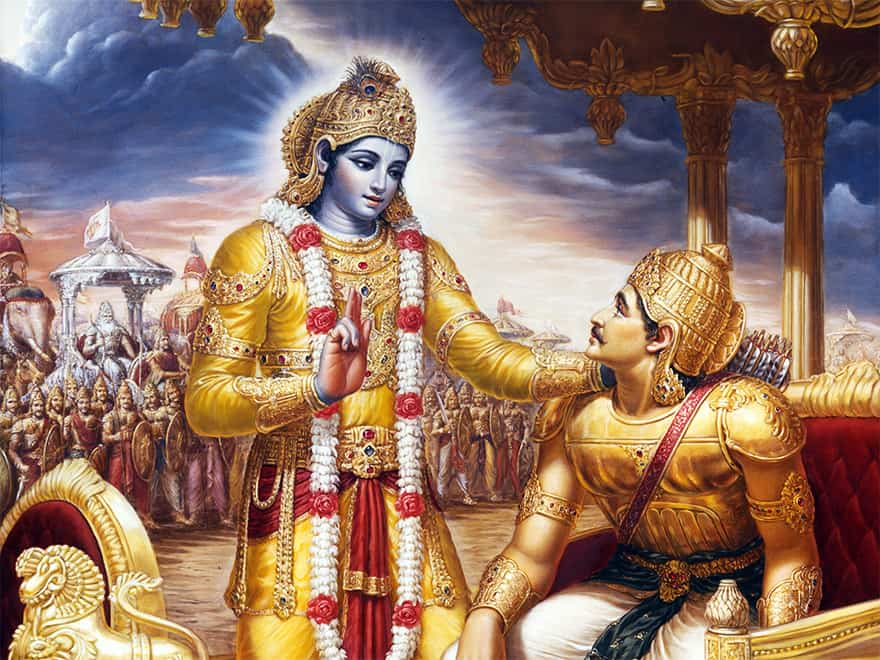
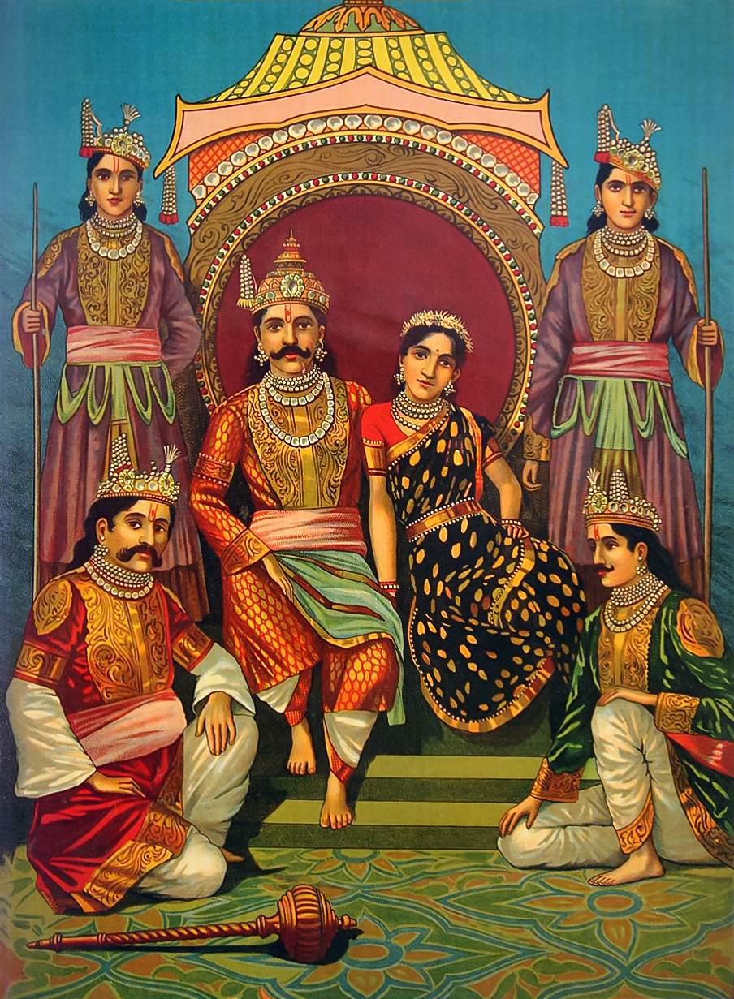
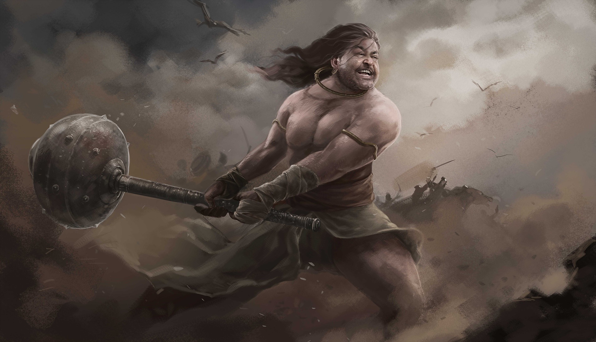
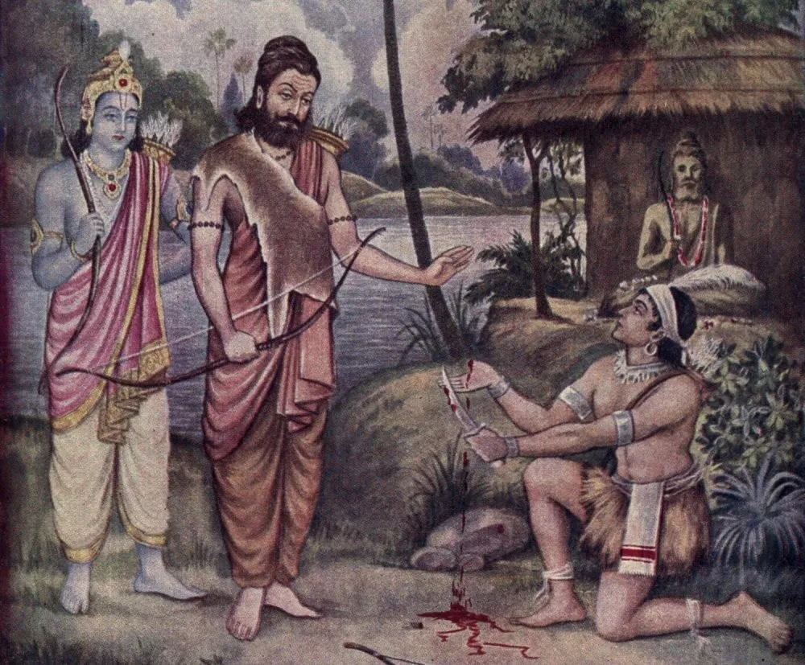
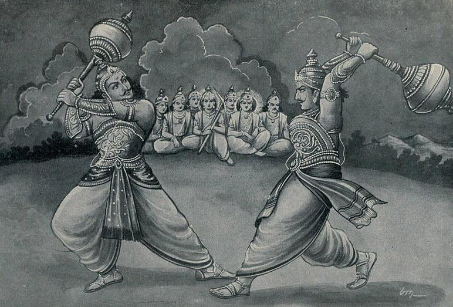
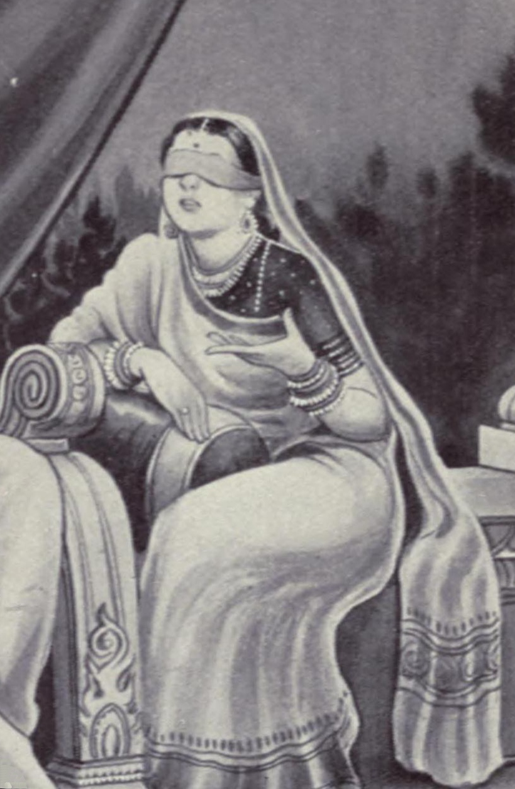
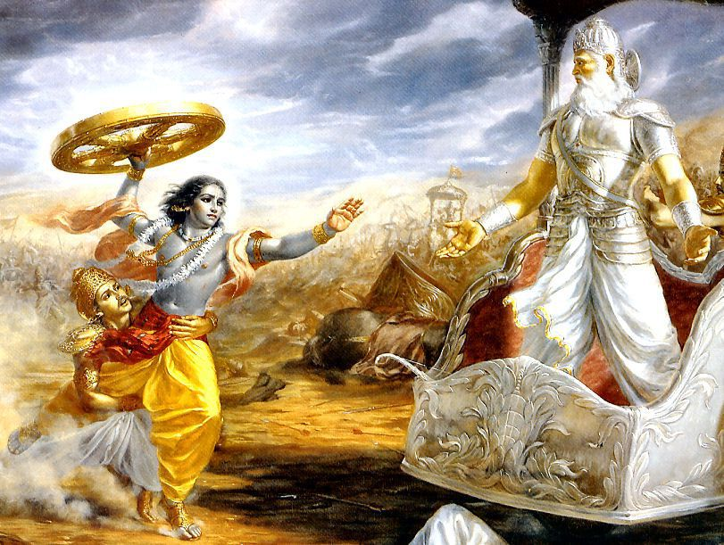

Arjuna
Arjuna is one of the major characters in Mahabharata. Arjuna plays the listener's role in Bhagavad Gita. Arjuna was the son of Pandu and Kunti in the Kuru Kingdom. He was the spiritual son of Indra. He was the 3rd of the Pandava brothers and was married to Draupadi, Ulupi, Chitrāngadā and Subhadra at different times. His 4 children included Iravan, Babruvahana, Abhimanyu and Srutakarma. Krishna was his cousin and mentor.

Draupadi
Draupadi is the most important female and one of the most important characters in Mahabharata.

Bhima
Bhima is the 2nd born of the Pandavas. He was the son of Pandu and Kunti and spiritual son of Vayu. The Mahabharata relates many events which portray the might of Bhima. Physically, Bhima was the strongest person on Earth after Hanuman and Balarama. Bhima killed demons including Bakasura, Hidimbasura, Kirmira, Jatasura, etc. Bhima defeated and killed fearsome warrior Jarasandha. Bhima also slew Krodhavanshas, demon Maniman, and Kichaka. In Kurukshetra war, Bhima alone killed 100 Kaurava brothers. He was considered to have the physical strength of 10,000 elephants approximately. Bheema was an invincible wrestler and invincible mace fighter.

Ekalavya
Ekalavya is a character from the epic the Mahābhārata. He was a young prince of the Nishadha, a confederation of jungle tribes (Adivasi) in Ancient India.

Duryodhana
Duryodhana also is known as Suyodhana, is a major antagonist in Mahabharata and was the eldest of the Kauravas, the hundred sons of a blind king Dhritarashtra and Queen Gandhari. Being the firstborn son of the blind king, he was the crown prince of Kuru Kingdom and its capital Hastinapura along with his cousin Yudhishtra who was older than him. Karna was Duryodhana's closest friend.

Gandhari
Gandhari is a prominent character in the Indian epic the Mahabharata. She was a princess of Gandhara (modern-day Khyber-Pakhtunkhwa) and the wife of Dhritrashtra, the blind king of Hastinapura, and the mother of a hundred sons, the Kauravas.

Bhishma
Originally named as 'Devavrata', he was the eighth son of the Kuru King Shantanu and the river goddess Ganga. Bhishma was blessed with a boon from his father that he could choose the time of his death or he may remain immortal till he desires.
{kind=link}
{kind=link}
{kind=link}
{kind=link}
{kind=link}
{kind=link}
{kind=link}